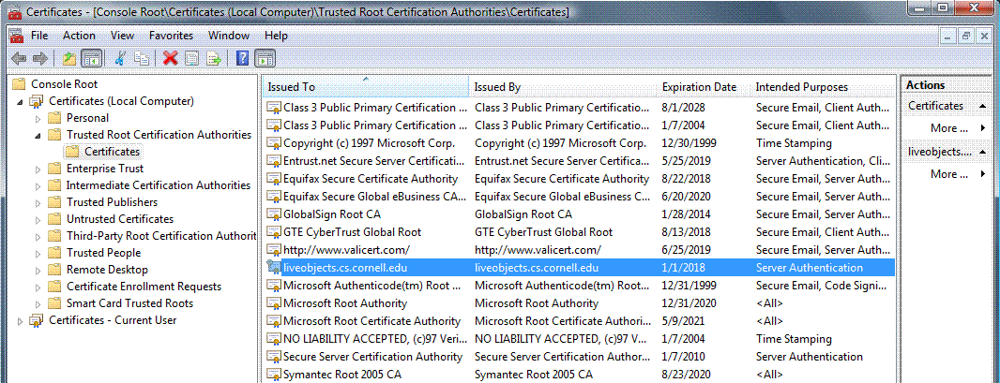
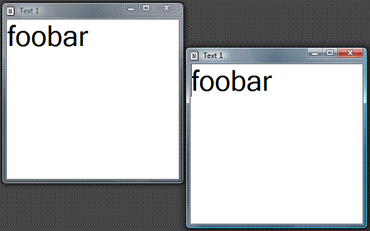
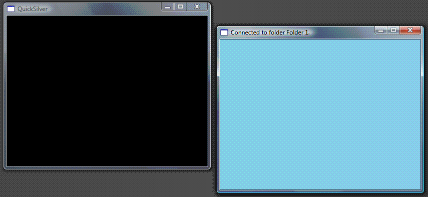
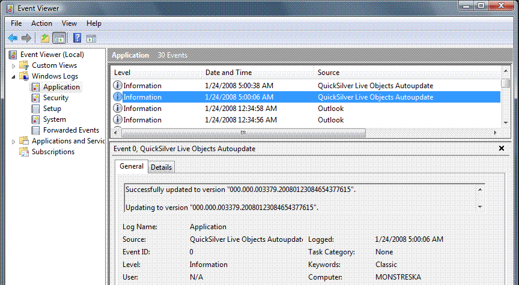
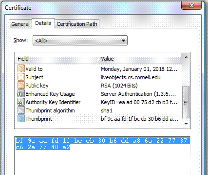

Prerequisites
Hardware Requirements
Software Requirements
Accessing the Live Objects Website
General Information
Accessing the SSL-secured Portion of
the Website
Registration
Downloading and Installing the Software
Download and the First
Installation Using a Standalone Installer
Applying Incremental Updates Manually
Configuring Automatic Updates
Configuring an Automatic Update Mechanism on the Client
Machine
Configuring an Automatic Update Server
In terms of hardware requirements, the most important limitation is that imposed by the XNA framework. If you machine does not support DirectX 9.0c and Shader Model 1.1, you will not be able to execute graphical components that rely on those features. You may or may not be able to install the system and use other components (we have not tested our system on legacy platforms). For more detail on the hardware requirements, refer to the information on the Microsoft's DirectX and XNA web pages.
Note: The above requirement may prevent you from being able to run the system in a virtual machine under VMWare, Microsoft Virtual PC, or Microsoft Virtual Server. We don't keep track of the current status of the problem and have not tested our system on these platforms, and the last time we checked, the hardware still lacked adequate support. If you do manage to run the graphical components or even the minimal subset of the platform on a virtual machine, please do let us know.
Currently, our system is only supported on Windows XP/2003/Vista/2008. The system will work on 32-bit and 64-bit versions of the OS (although in the latter case it will do so using WOW64; currently, Microsoft's XNA libraries are not supported for true 64-bit applications). True 64-bit and Linux versions of the runtime with limited functionality will be available in the near future.
In order to simply run the platform (but not develop components for it), you will need to install the following minimum runtime components, in the order in which they are listed below (note you may also need to install the latest service packs).
In order to develop components for the platform, you should equip yourself with a recent version of Visual Studio and the relevant SDKs (Windows, DirectX). We recommend setting up the following environment.
Components that are distributed as ISO can be installed by mounting ISO as a virtual drive, for example using (freeware) SlySoft's Virtual CloneDrive.
Although not necessary, the following are also extremely useful for this type of development:
For some advanced configuration, you may also need to locate on your machine or download various additional administrative tools, such as "makecert.exe" or "httpcfg.exe".
For comfortable development, you will sometimes need to control the local firewall settings, and be able to run as a local "Administrator" on the machine on which you are developing your application. On Windows Vista and Windows 2008, you may need to launch Visual Studio and Command Prompt in the "elevated" mode.
Before you read the tutorial, you may watch this short video that illustrates the sequence of actions we will walk you through.
The distribution, documentation, and all related content resides http://liveobjects.cs.cornell.edu. Some of the content is only available through a secure SSL connection, and some is only available to registered users. Anyone can register for free. We require registration because we would like to have a rough idea of who is using our system. We will not collect any personal information without explicitly requesting your permission to do so, and we will not share the registration data with anyone.
Accessing SSL-secured Portion of the Website
To access the secured portion of the website, you need to have a browser that supports 128-bit encryption, and you should install our server certificate in your trusted certificate storage, in the "Trusted Root Certification Authorities" folder and optionally also in the "Trusted People" folder. If the browser does not prompt you to do install the certificate automatically, you should follow the process outlined below.
Note: For the purpose of browsing the content on this server, it is enough to install the certificate in the folders associated with the "Current User". If your browser automatically prompts you to install the certificate, this is where the certificate will go. However, if you plan to use our optional update mechanism to automatically keep our machine in sync with our update server, you should place the certificate in the folders associated with the "Local Machine", so that it can be used also by the update service. The process outlined here achieves the latter.
The installed certificate should appears in the management console window as follows:

To register, simply click "register" navigate on the main page, or go directly to the registration form at https://liveobjects.cs.cornell.edu/registration.aspx. After you provide the credentials, we will send you an email with an activation code, which you need to type into the form at the activation page at https://liveobjects.cs.cornell.edu/activation.aspx to activate the account and gain access to the secured area at https://liveobjects.cs.cornell.edu/s/, from which you will be able to download the system and eventually also control various personal settings, such as notification or access to other services. Your email address will serve as the account name. Your credentials are stored in the cookies.
Download and the First Installation Using a Standalone Installer
Before you read the tutorial, you may watch this short video that illustrates the sequence of actions we will walk you through.
To perform the initial installation, you need to download a standalone "liveobjects.msi" file containing the installer from the secured area of our website, at https://liveobjects.cs.cornell.edu/s/. After downloading, execute the file from an account with Administrative permissions (the installation involves registering two system services and writing a handful of registry entries). As long as you have satisfied all prerequisites, the installation should not go smoothly. If any errors occur, double-check whether you have the necessary runtime components, and whether older, beta versions of these components are still on the system, thus causing problems with loading libraries and resolving dependencies. If the installation fails for unknown reason, please do contact us.
After installation, your machine is modified in the following manner:
To quickly test the system, start the "Live Distributed Objects" service, either by using the "Services" tool in "Administrative Tools", or by executing "net start LiveDistributedObjects" in the console window. Check that the service process has not terminated unexpectedly, and that it has a TCP port open at the default address 60000. You may do the latter by typing in "netstat -a -b -n" in the console window. In the output of the command, you should be looking for an entry that looks more or less like the following.
TCP 172.23.16.35:60000 0.0.0.0:0 LISTENING
[liveobjects.exe]
If you installed the SysInternals suite, you can achieve the same more easily by launching Process Explorer, double-clicking on the "liveobjects.exe" process, and selecting the "TCP/IP" tab in the information dialog that pops up.
If the service is running, you should be able to launch some of the pre-configured components we provided to get you started. Double-click on the "shared_text_1.liveobject" file in the "\examples" folder, or type "C:\liveobjects\bin\liveobjects.exe C:\liveobjects\examples\shared_text_1.liveobject" from the console window (modify the path accordingly). Do it at least twice. You should see two (or more) windows popping up. Any text typed in one of the windows should be automatically propagated to the others, in either direction. It should look more or less as follows.

You can also test whether XNA framework is supported on your machine by executing file "window_x.liveobject", again either by double-click, or by passing it as an argument to "liveobjects.exe". The component you are starting is a generic container for rendering live objects with 3-dimensional interface. If you see a window with a black background (picture on the left), the graphics components are working. In all likelihood, you will also hear a distinct noise of the fan on your graphics adapter spinning up. Now, try to drag file "shared_folder_1.liveobject" (don't confuse it with "shared_folder_1_view.liveobject") into the black window. The file you are dragging is a shared folder, and by connecting it to the 3-dimensional window, you instruct the runtime to start rendering all objects that reside in the shared folder and have a 3-dimensional interface. By default, the shared folder is empty, hence you should only see a patch of blue sky. The caption should also confirm that you are connected to the shared folder (as in a picture on the right).

When you are done testing, you can shutdown the service by executing "net stop LiveDistributedObjects". Because the multicast component we have installed by default for debugging purposes does not require secure connections, it is best to leave the service as starting manually and shut it down when not needed. Later in the tutorial, we will discuss the ways to configure secure communication.
Applying Incremental Updates Manually
Before you read the tutorial, you may watch this short video that illustrates the sequence of actions we will walk you through.
We create incremental updates are release much more often, sometimes daily. These updates assume that you have basic a folder structure and some initial configuration in place, so they should be used to patch a system that has been previously installed through a standalone installer, not for the initial setup. An incremental update is managed by "autoupdate\bin\autoupdate.exe", which comes already preinstalled, but by default is not active.
There are two modes of updating: updating using a manually downloaded update package, described in this section, and updating automatically. You can grab update packages from the secure area at http://liveobjects.cs.cornell.edu/s/. They are files with names of the form A.B.C.D, where A is a major version number, B is a minor version number, C is a version control label, and D is a timestamp.
To install an update manually, first you need to configure "autoupdate.exe" with the correct path where the updates need to be deployed. The update process is controlled by settings in the file "\autoupdate\configuration\configuration.xml". Open the file, and make sure that section "<root>" points to the root installation folder. The file might look like this:
<configuration>
<root>C:\liveobjects</root>
</configuration>
After you downloaded an update and configured the target folder, pass the update file as an argument to "\autoupdate\bin\autoupdate.exe", like this:
C:\liveobjects\autoupdate\bin\autoupdate.exe C:\Users\krzys\Downloads\000.000.003379.20080123084654377615
The updater is actually designed to be a service, so it won't output results to the screen, instead you can find its logs in the system Event Viewer. You can find the event viewer in Administrative Tools in the Start Menu, or you can start it by typing in the following command into the console window:
C:\Windows\System32\eventvwr.msc /s
There, navigate to the section with "Application" events, and find events generated by "Live Distributed Objects Autoupdate". The menus may loook a bit different depending on the version of Windows you're runnin. For example, on Windows 2008, the result will look like this:

You will also find the update file moved to folder "\autoupdate\updates\", and a log of some of the changes made in folder "\autoupdate\logs". Note that the update won't work if you just place the update file in the "updates" folder, you should download it elsewhere.
Configuring an Automatic Update Mechanism on the Client Machine
To configure automatic updates on the client, you need to enter a few additional entries in the "\autoupdate\configuration\configuration.xml" file. You need an additional section <load> that specifies the server from which you will download updates, and sections <user> and <password> where you store your credentials. The server address should be specified as "hostname:port", where "hostname" is a correct DNS name of the server. A correctly configured file might look like this:
<configuration>
<load>liveobjects.cs.cornell.edu:56000</load>
<root>C:\liveobjects</root>
<username>FOO</username>
<password>BAR</password>
</configuration>
You can obtain the user and password from whoever owns the server. As we shall explain below, you can setup your own update server, and update servers can connect to other update servers, to form a tree-like structure. You can also connect to our own "root" update server, you just need to write us an email requesting that. If you own multiple machines, though, you should do that only for one machine that will pull updates for your entire network, and act as a server for other of your machines.
Before you can invoke the update, you just need one more thing: install server certificate on the client. Because automatic update deploys executable content on your machine, we use secure transmission over SSL to make sure you don't end up connecting to a fake server and downloading a virus, or spilling you credentials to a malicious third party. While establishing an SSL connection, the client receives a certificate from the server that represents the proof of the server's identity. For the connection to go through, the client machine must be configured to explicitly trust the server's certificate, by placing the certificate in the "Trusted People", and perhaps, if the certificate is self-signed, also "Trusted Root Certification Authorities" of the "Local Machine" folder (note it must be "Local Machine" folder, not "Current User", because the certificate is used by our autoupdate service, which runs as a system process.
Note: As an additional precaution against attacks, we sign all updates with a secret private key that resides on a secure server behind a firewall, and the automatic updater verifies the signature against a hard-coded public key before unpacking and running the content, so the automatic updates should be completely safe to your machine even in case the update server is compromised. The automatic updater never updates itself, so as long as you protect the updater executable "autoupdate.exe" against tampering, the process should pose absolutely no threat. On the other hand, you must protect "autoupdate.exe" from tampering. Ideally, you should restrict security settings, so that only the SYSTEM account and you personally have rights to modify that file (and ideally, you should also make the file read-only to yourself, to make sure a malicious process running on behalf of you won't overwrite it).
Our root update server uses the same certificate you used to connect to the secure portion of our webpage. If you already installed this certificate in the "Trusted Root Certification Authorities" folder of the "Local Machine", you don't need to do anything. If not, go back to the earlier instructions and do that now.
With all the setup in place, you can just run "autoupdate.exe" without arguments, and you should see an event in the "Application" log reporting either a successful update, or that no updates are available.
Finally, to run updates regularly in the background, make the "QuickSilver Live Objects Autoupdate" service start automatically. The service will check for updates at each reboot, and at a specific time during the day. You should configure the latter by adding an additional <time> entry in your configuration, with the time in the HH:MM format:
<configuration>
...
<time>5:00</time>
</configuration>
Configuring an Automatic Update Server
Before you read the tutorial, you may watch this short video that illustrates the sequence of actions we will walk you through.
To configure your machine as a server, you need to run the "QuickSilver Live Objects Autoupdate" service, ideally by configuring it to start automatically, add put an additional "<host>" section in the configuration file at "\autoupdate\configuration\configuration.xml", with your correct DNS address and port number, as shown below. Your machine can act as both a server and a client. If you leave the <load> section in, your server will obtain updates from other servers. If you leave it out, your server will only serve the updates that you manually placed in the "\autoupdate\configuration\updates" folder. The update package with the latest number in that folder is assumed to be the one to serve.
<configuration>
...
<host>liveobjects.cs.cornell.edu:56000</host>
</configuration>
Note that you may need to explicitly allow the port on your personal firewall.
The server only accepts connections from authorized clients. The list of users and their credentials are stored in file "\autoupdate\configuration\users.xml", with one <user> entry for each client, as below:
<users>
<user name="FOO" password="BAR" />
</users>
In order to accept client connections, the server must also have a server certificate that clients trust. To generate a self-signed certificate yourself, you can use a "makecert.exe" tool. If you installed Windows SDK, you will find this tool in the Windows SDK folder, for example "C:\Program Files\Microsoft SDKs\Windows\v6.0A\bin\makecert.exe". If not, you may need to search for it elsewhere (it's a free tool). The command that creates a certificate for a host named HOSTNAME and installs it locally on that host would like as follows:
makecert -n CN="HOSTNAME" -r -pe -a sha1 -b 01/01/2008 -e 01/01/2010 -eku 1.3.6.1.5.5.7.3.1 -sky exchange -sp "Microsoft RSA SChannel Cryptographic Provider" -sy 12 -ss My -sr LocalMachine
Once the certificate is created, you should open the "Certificates" snap-in (see the earlier instructions for how to do that). You will find the newly created certificate in a "Personal" folder in the "Local Computer" section. Right-click on the certificate, select "All Tasks", and then "Export". Walk through the wizard. Do not export private keys. Generate a ".CER" file. Then, distribute that file to the client machines, and follow the earlier instructions for how to configure the client machines to trust this certificate (you need to import it into the "Trusted Root Certification Authorities" in "Local Machine").
Now, you just need to associate this certificate with the autoupdate service. First, obtain the certificate thumbprint. Double-click on the certificate in the "Certificates" snap-in, or on the ".cer" file you exported, switch to the "Details" tab, and scroll to the "Thumbprint" section, as shown below. Select the entire thumbprint, paste it into Notepad, and remove all spaces between numbers (for example, press Ctrl+H, type a space in the “find what”, type nothing in “replace with”, click “replace all”). After spaces removed, select the certificate thumbprint and copy to clipbopard (Ctrl+C).

Now, if you are running Windows XP/2003, type in the following command, replacing PORT with the port number you selected for your autoupdate service, and THUMBPRINT with the thumbprint without spaces between numbers you've just created. If the "httpcfg.exe" tool is not present on your system, you can extract it, for example, from Windows Server 2003 Service Pack 1 32-bit Support Tools. You can also find it elsewhere, it's a widely-used, free tool.
httpcfg.exe set ssl -i 0.0.0.0:PORT -h THUMBPRINT
If you are under Windows Vista/2008, the command would look as follows. The "netsh" tool should be preinstalled on your system.
C:\Windows\System32\netsh.exe http add sslcert ipport=0.0.0.0:PORT certhash=THUMBPRINT appid={38239C9A-D38B-478f-AADB-DFDF52143F6C}
You can check the association you created by running "httpcfg.exe query ssl" or "netsh.exe http show ssl". You should see a printout that includes a record that looks something like the following.
IP : 0.0.0.0:56000
Hash : bf9caafd1fbccb30b6dda86a227737c62a7748a2
Guid : {00000000-0000-0000-0000-000000000000}
CertStoreName : (null)
CertCheckMode : 0
RevocationFreshnessTime : 0
UrlRetrievalTimeout : 0
SslCtlIdentifier : (null)
SslCtlStoreName : (null)
Flags : 0
After that, you should be able to launch the service and accept client connections. You will find a report in the system event log every time a client successfully downloads a new update.